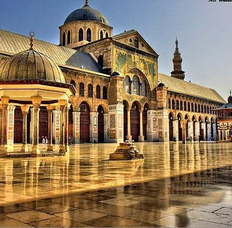
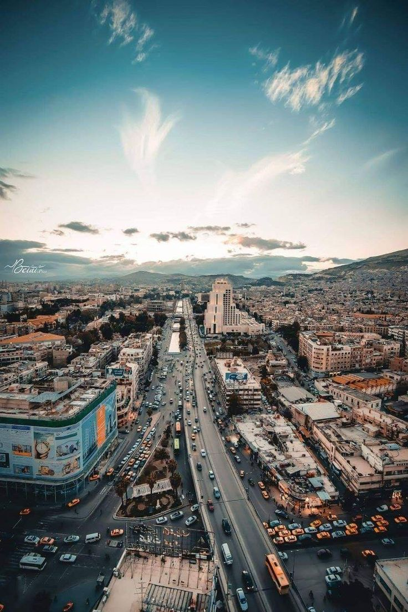
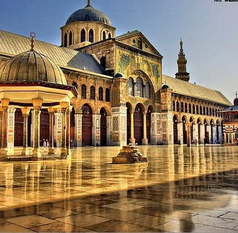
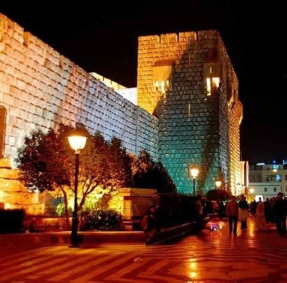
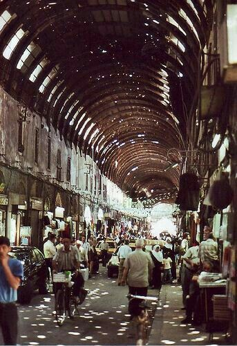
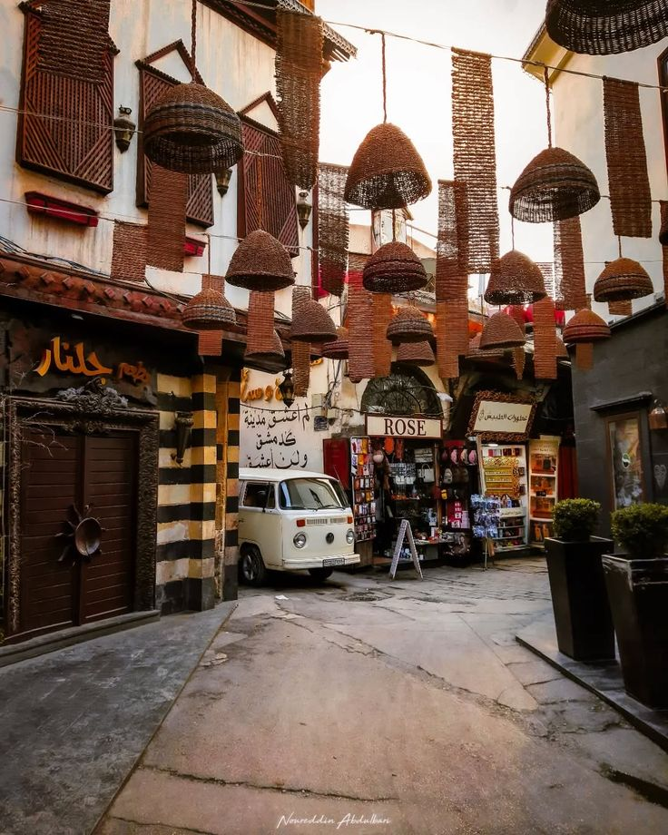
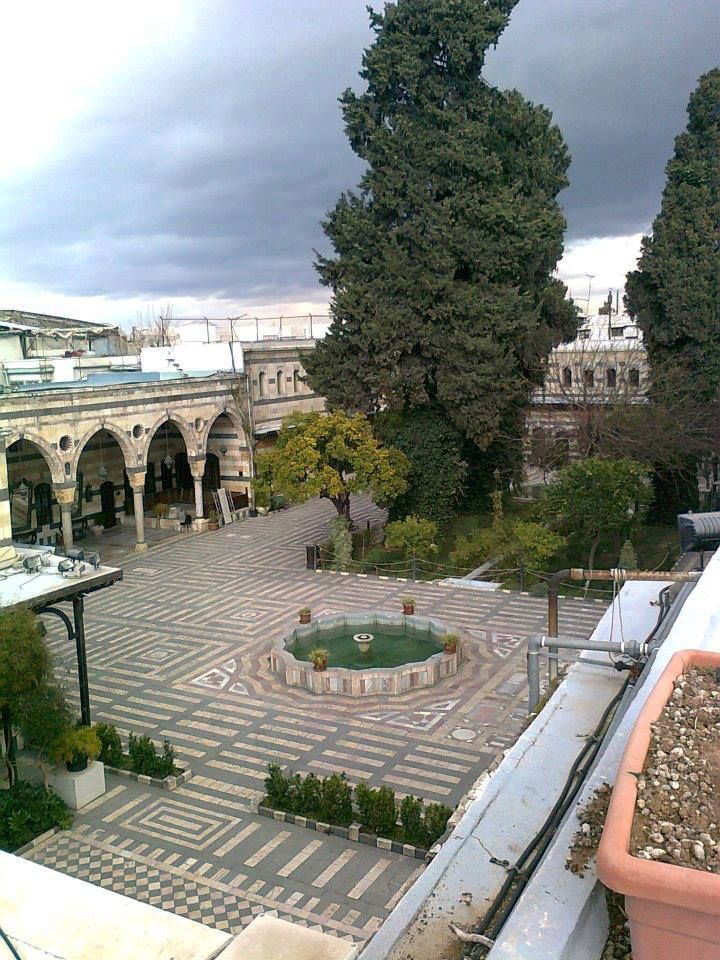
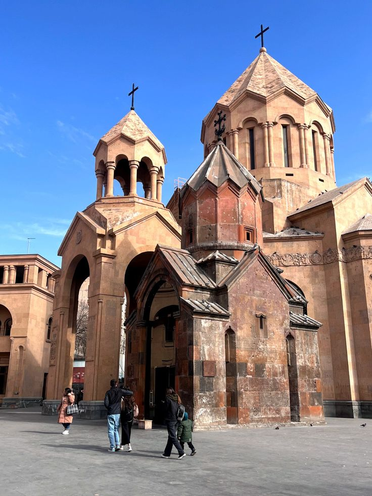

الجامع الأموي
أحد أعظم المساجد في العالم الإسلامي، بني في العصر الأموي ويضم ضريح النبي يحيى.
دمشق هي عاصمة الجمهورية العربية السورية وأقدم عاصمة مأهولة في العالم. تأسست قبل أكثر من 11000 عام وتعتبر منارة للثقافة والحضارة العربية، اشتهرت بتاريخها العريق وتراثها الثقافي الغني.
شهدت دمشق العديد من الحضارات:
أحد أعظم المساجد في العالم الإسلامي، بني في العصر الأموي ويضم ضريح النبي يحيى.
قلعة أيوبية تاريخية بناها الملك العادل أبو بكر أيوب، وتعتبر من أهم القلاع في سوريا.
أشهر الأسواق الشرقية، يمتد لمسافة 600 متر ويشتهر بمحلات الأقمشة والحرف اليدوية.
من أقدم أحياء دمشق، يتميز بشوارعه الضيقة وبيوته الدمشقية التقليدية.
أجمل القصور الدمشقية، بني في القرن الثامن عشر ويضم متحف الفنون والتقاليد الشعبية.
إحدى أقدم الكنائس في العالم، يعتقد أنها بيت حنانيا حيث تعمد القديس بولس.
تعتبر دمشق مركزاً ثقافياً رئيسياً في العالم العربي، حيث:
يتميز المطبخ الدمشقي بتنوعه وغناه، ومن أشهر أطباقه: